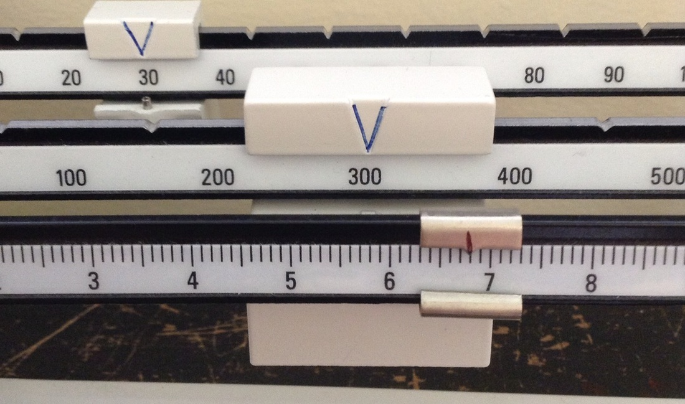

Measurement Lab
Menu
Triple Beam Balance
A triple beam balance is a tool to measure the mass of an object. Mass is different from weight as mass is a measure of how much matter something has is measured by balancing and will be the same on every planet. Weight is a measure of force and depends on the gravity of the planet.
In order to use a triple beam balance, first you would slide all the weights to the left (zeroing the scale). Then you would move the weights until the scale is balanced. To read the mass, you add up the 3 masses. For the image below, the mass would be 300+30+6.8=336.8 grams

Now you try
Read and record the length of the line below. Answer the questions on your lab report.